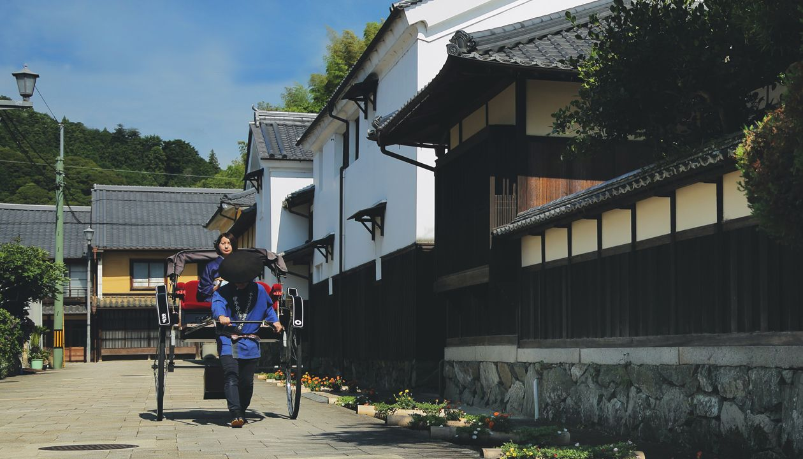
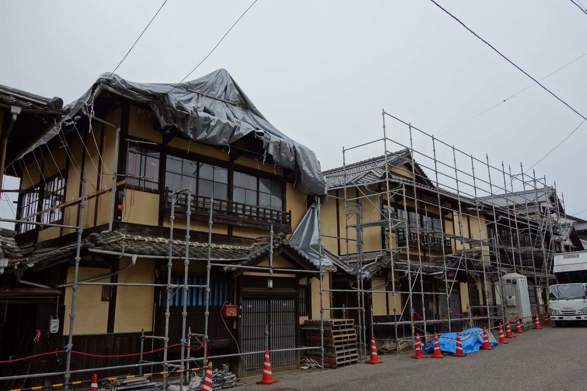

どんな制度を使える？
家から応援する、登録してつながる、移り住む、店をひらく。大洲とのかかわり方ごとに、国と市の制度をまとめました。
大洲の外から、家にいながら応援したい方へ
応援したい自治体に寄附して、税金の控除を受けられる制度です。大洲市の外から、家にいながら応援できます。
出典：大洲市ホームページ「ふるさと納税」（2026年8月6日更新）
市が案内しているサイト以外では申し込めません。問い合わせは大洲市ふるさと納税サポート室 050-8890-3501（9:00〜17:00、土日祝・年末年始は休み）。
住民票はそのままで、大洲とつながりたい方へ
住民票は今の住所のまま、アプリで大洲市に「ふるさと住民」として登録する、国（総務省）の新しい制度です。正式な名前は「ふるさと住民登録制度」。
地域の情報を受け取り、地域の担い手活動に参加できます。登録証が出ます。
マイナンバーカードで本人確認をします。市町村が用意する支援を使えます（3地域まで）。
支援の中身は市町村ごとに決まります。国の例は、交通費・宿泊費の補助や、公共施設を住民と同じように使えることなどです。
出典：総務省「ふるさと住民登録制度ナビ」、同省の全国説明会資料（2026年9月30日）
大洲で暮らすことを考えている方へ
いきなり引っ越さなくて大丈夫。泊まって、通って、それから相談する。
泊まる
観光ではなく、朝のまちや店、人との距離を確かめる。
通う
住む前に知り合いが10人いると、移住は失敗しにくくなります。
相談する
市の移住・定住支援センターが、ひとつの窓口で受けています。

まちびとファイル
銀行員から町家のオーナーへ。帽子千秋さん、山鬼育子さん、冨永明佳さんの話は「まちびとファイル」に。
下見の宿泊費
移住を考えている県外の人。市内の宿の宿泊費の半分（1回4泊・2人まで、2回まで）
最大1人1泊
3,000円
入居・引っ越し費用
市外から移り住む世帯。賃貸の敷金・礼金・仲介手数料や、引っ越し業者に払った費用の半分（県外から移る子育て世帯の場合。ほかは5万〜10万円）
最大15万円
仕事のために借りた部屋の家賃
市内で働く・起業するために新しく部屋を借りた人。最長2〜3年
最大月1〜2万円
空き家バンクの家を買う
空き家バンクに登録された家を買う人。購入費の10分の1（県外から移る子育て世帯の場合。ほかは25万〜75万円）
最大100万円
空き家バンクの家を直す
登録された家を直す人。県外から移る子育て世帯の場合（ほかの世帯は25万〜100万円）
最大400万円
東京23区からの移住支援金
東京23区に住んでいた・通っていた人が、対象の求人への就職や起業などで移る場合（愛媛県と市）。単身は60万円、18歳未満の子1人につき最大100万円を加算
世帯で最大100万円
新築・建売住宅を買う
移り住む子育て世帯。工事費・購入費の10分の1（県外からの場合。県内からは125万円）
最大150万円
市外への通勤費
移り住む子育て世帯が、鉄道・バスの定期で市外へ通う場合。最長2年
最大月1万円
結婚して新しく暮らす
29歳以下・所得の合計500万円未満の夫婦の場合（住まいの取得・家賃・引っ越し）
最大60万円
空き家の家財道具の処分
空き家バンクに登録する人、登録された家を買う・借りる人（県外から移る世帯の場合。ほかは10万円）
最大20万円
空き家の仲介手数料
空き家バンクの家の売買で、仲介業者に払った手数料の半分
最大10万円
地域おこし協力隊として来る
県外から協力隊に就く人の移動・引っ越し費用（3分の2）
最大15万円
どの補助も、使う前に市の認定が要ります（先に契約・工事を始めると対象外になるものがあります）。年齢などの条件があり、予算がなくなり次第終わります。まず下の相談の窓口へ。
出典：大洲市「移住・定住促進補助金」（2026年4月1日更新）、愛媛県「令和8年度愛媛県移住支援事業の詳細」
事業者は2026年度途中までの通算で、撤退した4事業者を含みます。仕事と移り住んだ人は2024年度までの累計。仕事は延べの数です（辞めた人は差し引いていません）。
出典：キタ・マネジメント「令和7年度実績報告」
かつては「大洲に仕事がないから出る」でした。いまは「この仕事があるから大洲に来る」人がいます。
まず、泊まりに来る。城下町にはゲストハウスやシェアハウスを備えた拠点があります。数日〜数週間の滞在で、朝のまちの空気、スーパーの品揃え、人との距離感——観光では見えない「暮らしの解像度」を確かめてください。市のお試し住宅は5日から180日まで使えます（5〜10日は1日2,000円。市のホームページ 2025年4月更新）。
次に、通ってみる。まちの手伝いに季節ごとに通う、イベントの度に来る。「住む前に知り合いが10人いる」状態をつくってから決める移住は、失敗しにくい移住です。
それから、相談する。住まい・仕事・子育て——具体的に検討する段階になったら、市の移住・定住支援センターへ。空き家バンクや補助制度の案内も、ここが窓口です。
進学や就職で大洲を出たみなさんへ。あなたが出て行ったときの大洲と、いまの大洲は、たぶん別のまちです。取り壊されかけていた城下町には40を超える事業者が灯りをともし、大洲の高校生の70.2%が「いまのまちづくりに関心がある」と答える（2025年度の調査）まちになりました。盆と正月に帰るたび、少しずつ変わっていく——その変化の側に、次はあなたの席があります。
大洲で店や事業をはじめる・引き継ぐ方へ
大洲で店や事業をはじめる人、引き継ぐ人の相談には、市と商工会議所・商工会・地元の金融機関がいっしょに乗っています。

相談する
どこに相談すればよいか迷ったら、市の商工の窓口へ。商工会議所や銀行など、合う相談先を紹介してくれます。
学ぶ
個別相談か、いよぎんの起業塾で、経営・財務・人材育成・販路開拓を1か月以上かけて学びます。
使う
会社をつくるときの登録免許税が半分になり、信用保証協会の創業向け保証の特例や、市の創業支援の補助を使えるようになります。
申請は2027年2月26日まで
創業支援
市内に店・事業所を開く、会社をつくる人。店の賃料・改装・備品・広報などの半分
最大50万円
創業（上乗せ）支援
地域の資源を使い、地域の課題に取り組み、地元の金融機関の融資を受けるなど、5つの条件を満たす開業
最大200万円
商店街の空き店舗の家賃
商店街の空き店舗を借りて、週5日以上、昼に営業する人。家賃の半分（2年目は3分の1、3年目は4分の1）
最大60万円
事業承継支援
店や事業を引き継ぐ人。改装・備品・専門家への相談料などの半分
最大50万円
申請は2027年2月26日まで（予算に達した時点で終わり）。移り住んで起業する人は、上の「仕事のために借りた部屋の家賃」の補助も対象です。
出典：大洲市「創業支援」（2025年12月16日更新）、「中小企業者・小規模事業者応援事業補助金」（2026年4月15日更新）
どこに相談すればよいか迷ったら
移り住むことは市の移住・定住支援センター、店をひらく・継ぐことは市の商工の窓口が受けています。
出どころ：写真の帯・移り住む・店をひらく・継ぐの写真は OZU 555 PROJECT 写真共有フォルダ（秋の大洲は VM（バリューマネジメント）提供）。写真と人物の経歴は「大洲まちづくりブック」（2026年5月・キタ・マネジメント発行）とキタ・マネジメントの提供。窓口とお試し住宅は大洲市ホームページ（2026年10月1日に確認）。ふるさと納税・第二市民制度・移り住むときの補助・開業の支援は、各節の出典のページで2026年10月20日に確認。